Análisis sobre el dataset KDD Cup 1999 que parte de un principio simple: el tráfico malicioso colapsa o explota la diversidad estadística de los paquetes, y eso deja una firma medible en la entropía antes de necesitar un modelo supervisado.
La pregunta que está detrás de este trabajo es la misma que aparece en monitorización de sistemas y en evaluación de modelos: cómo distinguir un comportamiento legítimo de uno adversarial cuando no hay un oráculo confiable, cuando los ataques son raros y cuando un atacante tiene incentivos para mimetizarse con la distribución base.
La intuición central es de teoría de la información. Un ataque de denegación de servicio reduce drásticamente la diversidad de los paquetes que envía, miles de SYN idénticos. Un escaneo de puertos hace lo contrario, explota la diversidad probando combinaciones nuevas. Ambos rompen el perfil entrópico del tráfico legítimo, aunque sus medias y varianzas puedan parecer normales.
Usar entropía como detector es atractivo por una razón concreta para safety: no necesita etiquetas y se calcula sobre ventanas en tiempo real. Funciona como una capa de alerta antes de que el clasificador supervisado vea siquiera el tráfico, y permite definir baselines de normalidad sobre los que cualquier desviación se vuelve auditable.
La entropía mide la incertidumbre o desorden de una distribución de probabilidad sobre los valores que toma una variable. En el contexto de tráfico de red la calculamos por feature y por tipo de conexión, después de discretizar los valores en bins.
La lectura es directa. Si H se acerca a cero, una sola realización domina la distribución, lo que corresponde a paquetes idénticos típicos de un flood. Si H se acerca al máximo teórico $\log_2(k)$ con $k$ bins, todos los valores son equiprobables, que es el patrón de un escaneo. La entropía media estable corresponde al perfil mixto de un servicio real con HTTP, DNS, SSH y FTP conviviendo.
La razón para preferir entropía sobre media o varianza es que un flood puede tener exactamente la misma media de bytes que el tráfico normal y aun así colapsar su entropía a cero. Lo que cambia bajo ataque no es la magnitud, es la diversidad.
Para seleccionar las features que realmente aportan señal sobre el label binario is_attack usamos información mutua, que cuantifica cuánta incertidumbre sobre Y se reduce al observar X.
Trabajamos con tres variantes implementadas en FSelectorRcpp porque cada una corrige un sesgo distinto.
| Métrica | Definición | Qué corrige |
|---|---|---|
infogain | $I(X;Y)$ | Versión base, sesgada hacia variables con muchos valores únicos. |
gainratio | $I(X;Y) / H(X)$ | Penaliza variables con entropía propia alta, por ejemplo identificadores. |
symuncert | $2 I(X;Y) / (H(X) + H(Y))$ | Simétrica, normalizada en [0, 1]. La más robusta para ranking. |
El dataset KDD Cup 1999, subconjunto del diez por ciento, contiene 494,021 conexiones de red etiquetadas con 41 features numéricas y categóricas. Después de limpiar el label y agrupar los ataques en sus cuatro familias (DoS, Probe, R2L, U2R), la distribución de clases queda fuertemente desbalanceada.
| Clase | Instancias | Porcentaje | Descripción |
|---|---|---|---|
| dos | 391,458 | 79.2 | Floods tipo Neptune (SYN) y Smurf (ICMP) |
| normal | 97,278 | 19.7 | Tráfico legítimo |
| probe | 4,107 | 0.83 | Escaneos y reconocimiento |
| r2l | 1,126 | 0.23 | Remote to Local, intento de imitar tráfico normal |
| u2r | 52 | 0.01 | User to Root, escalada de privilegios |
Punto importante para safety. Las clases más peligrosas (u2r, r2l) son las más raras. Cualquier métrica global está dominada por DoS, y un detector que parezca tener accuracy del 99 por ciento puede estar fallando casi por completo sobre las clases que más importan.
El resumen estadístico confirma la asimetría extrema del tráfico de red. src_bytes va de cero a valores millonarios, serror_rate tiene mediana cero en normal pero picos cerca de uno en DoS, y count llega a 511 conexiones por host en ventanas de dos segundos. Este perfil sesgado es exactamente el escenario donde la entropía supera a los estadísticos clásicos, no asume normalidad.
Antes de calcular entropía explícitamente, las distribuciones por clase ya hacen evidente la estructura de la señal. Cada tipo de ataque deja una huella distinta sobre las features de red, y esa huella es lo que después medimos cuantitativamente.
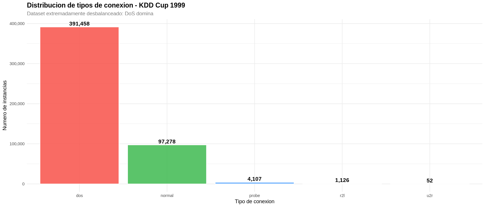
Figura 1. Distribución de la variable attack_type. El desbalance es lo primero a tener en cuenta a la hora de leer cualquier métrica global del modelo. Las clases peligrosas (r2l, u2r) están en el límite de lo aprendible con métodos puramente estadísticos.
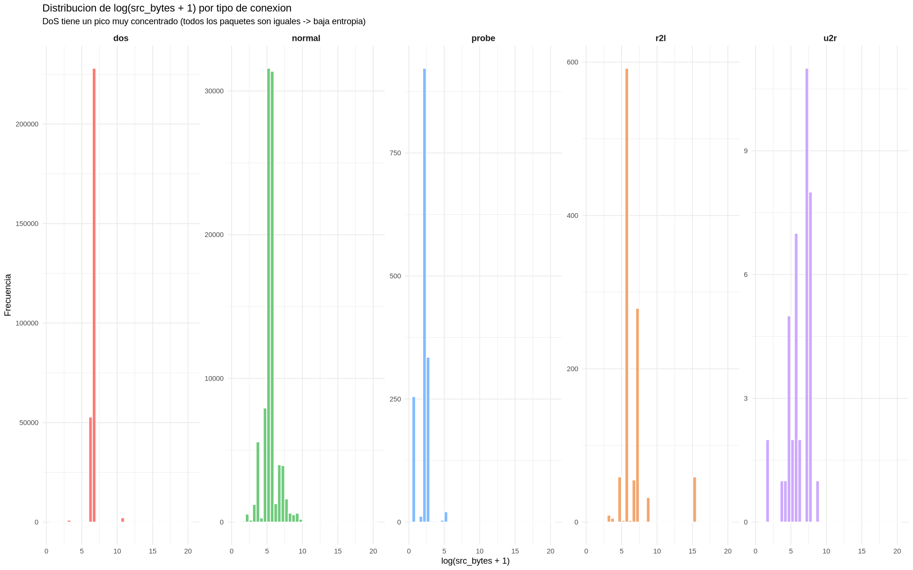
Figura 2. Histogramas de src_bytes y dst_bytes por tipo. DoS muestra una masa concentrada en un único bin, que es la firma visual de un flood. Probe presenta dispersión amplia. Normal muestra la mezcla esperable de servicios reales. Esta es la observación que motiva el uso de entropía como detector.
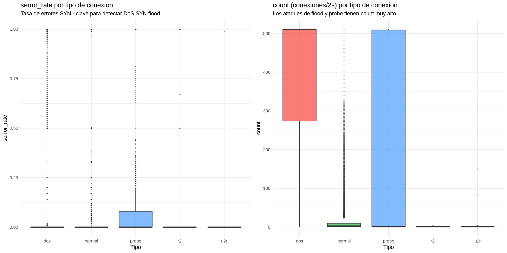
Figura 3. Boxplots de serror_rate y count. La mediana de serror_rate en DoS está en uno, en normal está en cero. count en DoS y Probe llega a valores cercanos a 511, propios de barridos masivos. Una sola de estas variables ya separa visualmente la mayoría de los ataques DoS del tráfico legítimo.
Calculamos la entropía de cada feature numérica condicional al tipo de ataque, discretizando los valores en bins de igual ancho. El objetivo es construir una tabla donde cada celda responda a una pregunta concreta, cuánta diversidad tiene esta variable cuando estamos dentro de este tipo de tráfico.
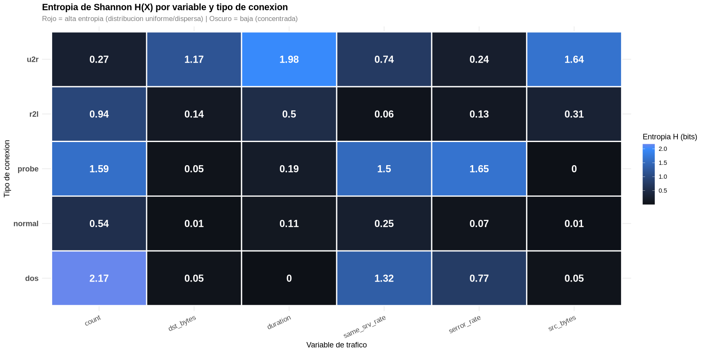
Figura 4. Heatmap de entropía por feature y tipo de ataque. La fila dos es la más fría en src_bytes y dst_bytes, confirmando el colapso de diversidad en floods. La fila u2r es la más caliente, gran variedad de técnicas (buffer overflow, rootkit, exploits de perl) que evitan dejar una firma única.
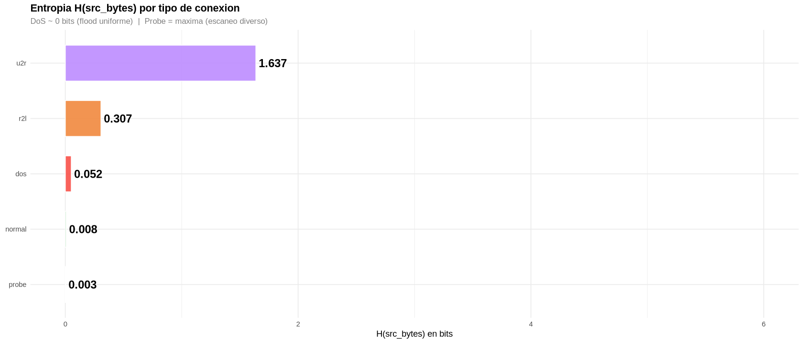
Figura 5. Barras de entropía por tipo sobre features clave. Lectura útil para safety, las clases R2L y U2R tienen entropías muy próximas a las de tráfico normal en varias features, lo que explica por qué históricamente son las más difíciles de detectar. Se camuflan en la distribución base.
| Tipo | H(src_bytes) | H(dst_bytes) | Interpretación |
|---|---|---|---|
| dos | 0.052 | 0.051 | Flood envía paquetes idénticos |
| normal | 0.008 | 0.014 | Tráfico HTTP predecible |
| probe | 0.003 | 0.051 | Sondas iguales, destino variable |
| r2l | 0.307 | 0.143 | Moderada, imita tráfico normal |
| u2r | 1.640 | 1.170 | Máxima, técnicas heterogéneas |
Con la entropía caracterizada por clase, el siguiente paso es medir cuánta información aporta cada feature sobre el label binario is_attack. Esto convierte el problema de seleccionar variables en un problema cuantitativo, las features con mayor información mutua son las que más reducen la incertidumbre sobre si una conexión es maliciosa.
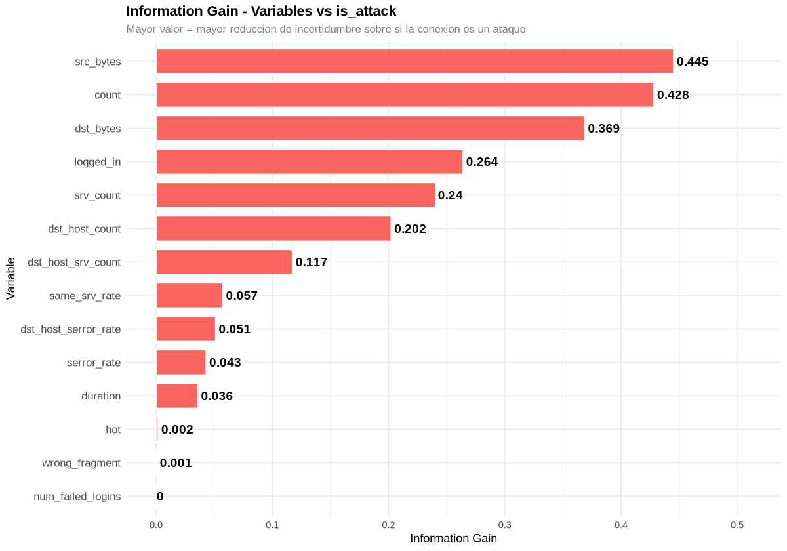
Figura 6. Ranking de Information Gain frente a is_attack. Las variables que dominan son count, dst_host_count, srv_count, logged_in y serror_rate. Reflejan las dos firmas dominantes, ráfagas masivas en ventanas cortas y ausencia de autenticación.
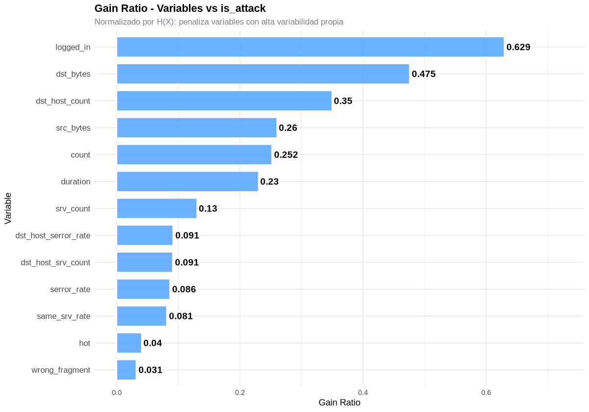
Figura 7. Gain Ratio. Normaliza el infogain por H(X), de modo que castiga variables que parecen informativas solo por tener entropía propia alta. El ranking se mantiene estable, lo que valida que las variables top no son artefactos de cardinalidad.
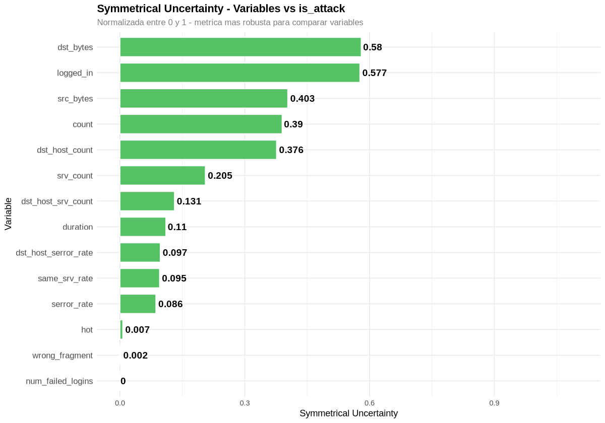
Figura 8. Symmetrical Uncertainty. Es la métrica más robusta de las tres porque está normalizada en [0, 1] y es simétrica. Los tres rankings convergen en el mismo grupo de variables top, lo que da confianza en que la señal no es un artefacto de la métrica elegida.
Las variables que descartamos por información mutua cercana a cero respecto al label binario son duration, wrong_fragment, num_failed_logins y hot. Mantenerlas en el modelo solo añadiría ruido y varianza a los coeficientes.
La selección por información mutua identifica variables predictivas, pero falta el chequeo de redundancia. Dos features muy informativas pueden estar midiendo lo mismo y desestabilizar los coeficientes del modelo.
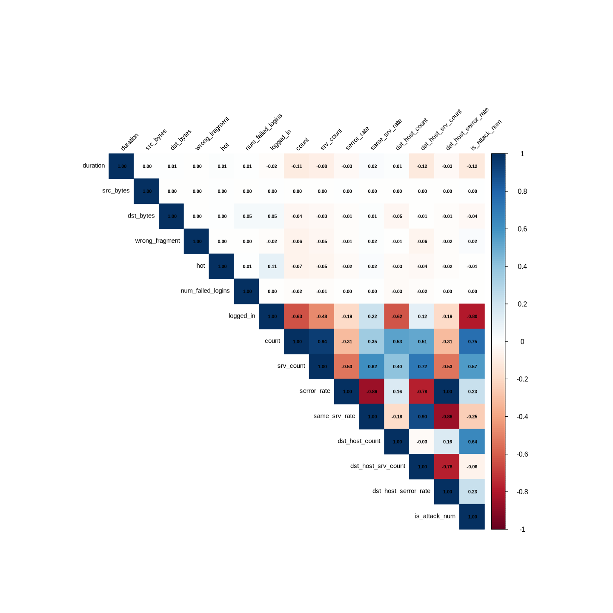
Figura 9. Matriz de correlación de Pearson. Las correlaciones positivas fuertes con is_attack_num son count (0.75), dst_host_count (0.64) y srv_count (0.57). La negativa más fuerte es logged_in (-0.80), el atacante raramente abre sesión autenticada.
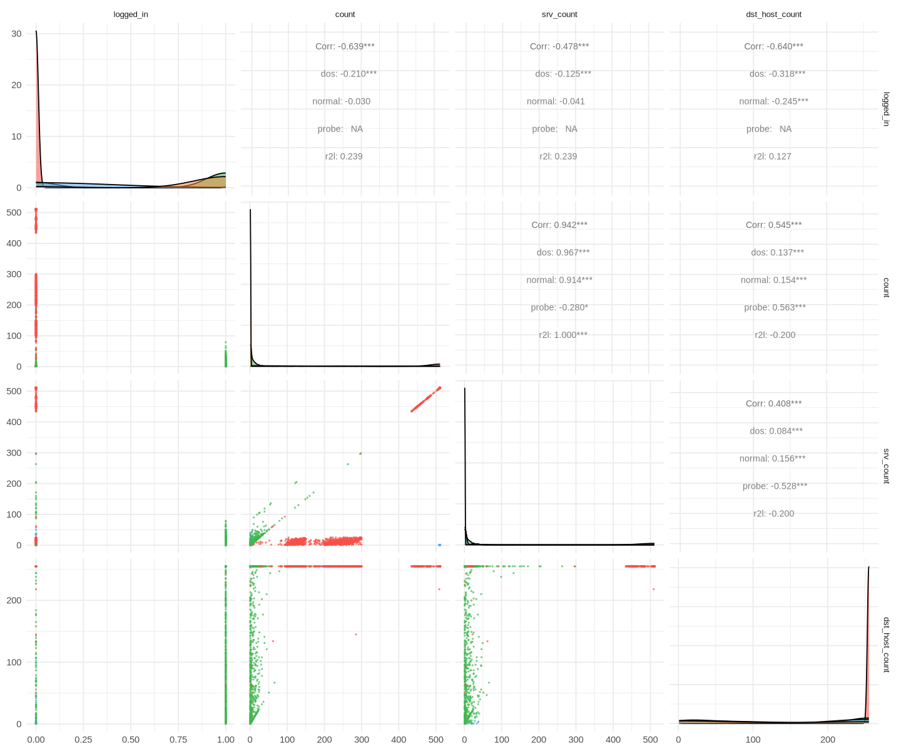
Figura 10. Pairs plot de las variables candidatas finales. La detección visual de redundancia es la pareja serror_rate y dst_host_serror_rate, con r casi uno. Se conservan ambas porque, aunque correlacionadas, capturan ventanas distintas, instantánea frente a historial del host.
El conjunto final de variables que entran al modelo es serror_rate, dst_host_serror_rate, src_bytes, same_srv_rate y count. Las tres metodologías (entropía, información mutua y correlación) convergen sobre este subconjunto.
El detector final es una regresión logística binaria sobre is_attack. La elección no es por capacidad bruta, es por interpretabilidad. Cada coeficiente tiene una lectura directa sobre cómo cada feature empuja la probabilidad de ataque. Para una capa de detección que se va a auditar, eso vale más que un punto extra de accuracy.
Partición estratificada 80/20 con createDataPartition de caret. Entrenamos tres modelos en orden creciente de complejidad para verificar que cada variable añadida aporta información genuina y no solo ajuste.
| Modelo | Variables | AIC | Lectura |
|---|---|---|---|
mrl0 | serror_rate | 359,221 | Base. Una sola variable, ya separa una parte importante. |
mrl1 | + src_bytes | 359,190 | src_bytes significativa (p = 0.014). |
mrl2 | 5 variables seleccionadas | 38,031 | Todos los coeficientes con p menor que 2e-16. Caída drástica de AIC. |
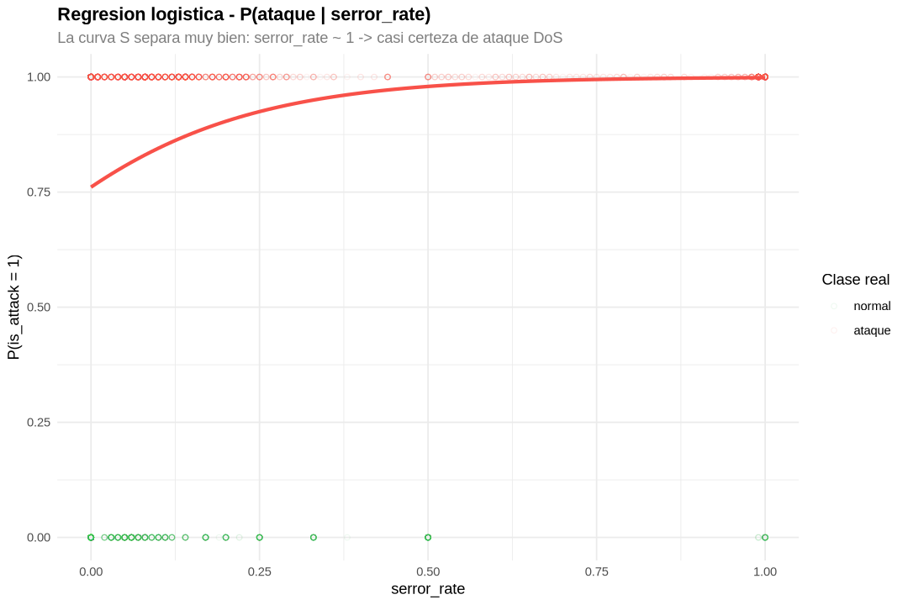
Figura 11. Curva sigmoide del modelo base, solo serror_rate. Detalle relevante, la curva no empieza en cero. El intercepto es 1.157, lo que pone la probabilidad base en torno al 76 por ciento. No es un error, es la consecuencia directa del desbalance del dataset (80.3 por ciento de ataques). Cuando se evalúa un detector entrenado sobre datos sesgados, esta clase de detalles cambia por completo la lectura de la curva.
Las métricas en train y test son prácticamente idénticas, lo que descarta sobreajuste. La diferencia de accuracy es de 0.01 por ciento y la de kappa es 0.003.
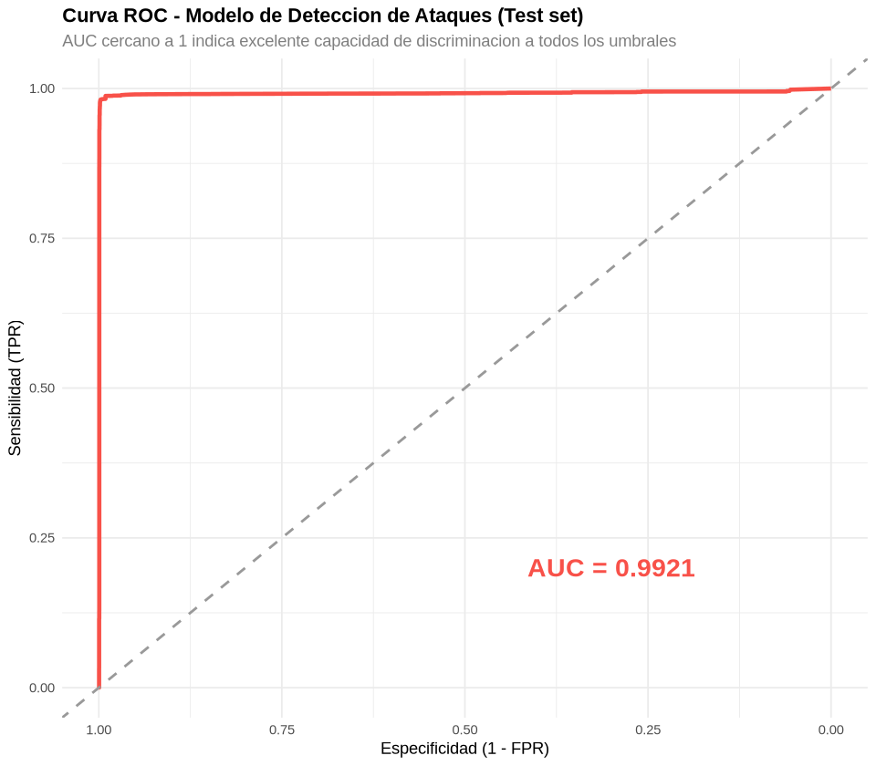
Figura 12. Curva ROC sobre el conjunto de test. El AUC de 0.9921 indica capacidad discriminativa excelente a cualquier umbral. La diagonal punteada es la referencia de clasificador aleatorio. El punto óptimo por Youden Index permite ajustar el umbral en función de la tolerancia operativa. En seguridad normalmente se prefiere mayor sensitivity aunque suba la tasa de falsos positivos, porque el coste de un ataque no detectado es mucho mayor que el de una alerta revisable.
Lectura honesta del número. El 98.80 por ciento de accuracy global está dominado por DoS, que es la clase mayoritaria. La sensitivity sobre u2r y r2l por separado sería mucho menor. Reportar accuracy global sin desglosar por clase en un sistema de seguridad es exactamente el tipo de métrica que oculta los fallos que más importan.
La entropía de Shannon caracteriza correctamente la firma de cada familia de ataque. DoS colapsa la entropía, Probe la maximiza, U2R la dispersa por usar técnicas heterogéneas. Esta caracterización se sostiene sin necesidad de un modelo supervisado, y eso la hace utilizable como capa de alerta temprana sobre tráfico no etiquetado.
La selección de variables por información mutua converge con la correlación de Pearson y produce un subconjunto pequeño, cinco features, que es suficiente para una regresión logística que generaliza bien.
serror_rate y dst_host_serror_rate (r casi uno). Un modelo ridge o eliminación por VIF reduciría la varianza de los coeficientes.La idea más interesante de cara a un sistema real es el detector de entropía deslizante, calcular H(X) sobre ventanas temporales y alertar cuando la entropía cae bajo el baseline de normalidad. No requiere etiquetas, no requiere un modelo entrenado por adelantado, y produce una señal interpretable que se puede auditar. Es el tipo de capa que tiene sentido tener antes de cualquier clasificador supervisado, porque captura desviaciones distribucionales que un modelo entrenado sobre la distribución antigua no vería.
Más en general, este proyecto es un ejercicio de algo que importa para safety. Las métricas globales sobre datos desbalanceados son fáciles de inflar y fáciles de creer. Lo útil es desglosar la métrica por clase, entender qué firma estadística se está usando para decidir, y dejar trazas auditables del por qué de cada alerta.